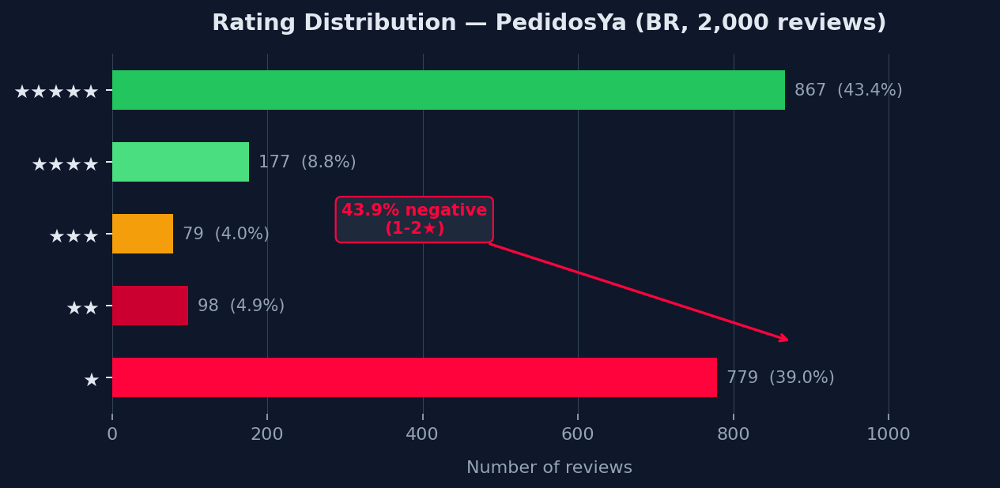
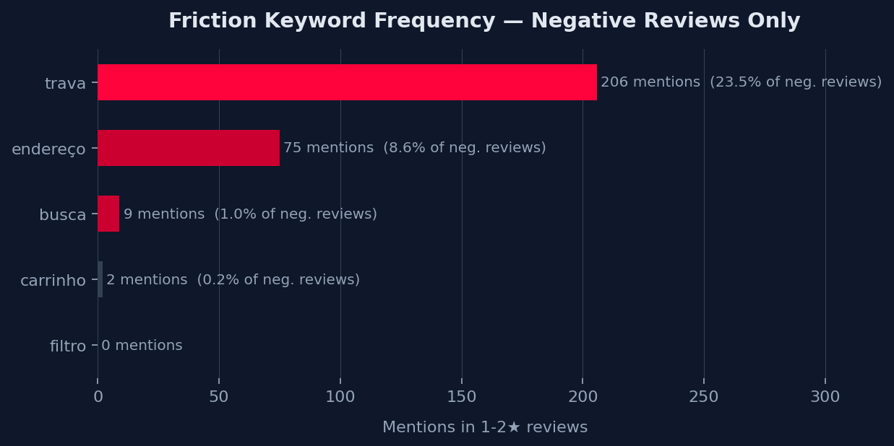
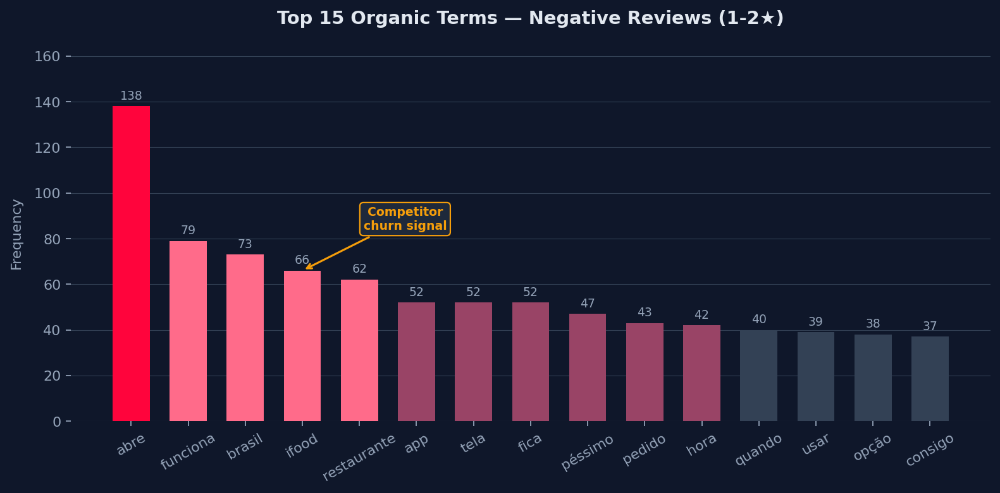
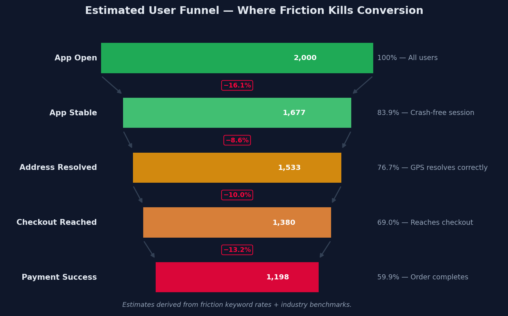

Executive Summary
The objective of this analysis is to identify hidden friction points in the PedidosYa user journey — specifically in the Discovery and Checkout stages — by translating qualitative user complaints into actionable Product Ops data.
Rather than relying on survey panels or internal analytics that require data warehouse access, this pipeline mines the publicly available signal embedded in 2,000 real Google Play Store reviews (Brazilian market, April 2026). The result: a quantified map of where users abandon, what words they use to describe their pain, and which competitor they name when they leave.
The 43.9% negative rate is well above the 15–20% industry benchmark for mature delivery super-apps. The dominant pain cluster is app stability: crashes, freezes and blank screens block users before they ever reach a restaurant menu. A secondary cluster around GPS/address failures and payment errors completes a funnel where friction compounds at every stage.
google-play-scraper (lang=pt, country=br).
No personally identifiable information is present — reviews are anonymous public text.
Step 1 — Data Extraction (Scraping)
The scraper targets com.pedidosya with Sort.NEWEST, collecting reviews
in 200-row batches using the library's pagination continuation_token.
A 500ms sleep between batches keeps the request rate polite.
The full 2,000 rows are written to pedidosya_reviews.csv with UTF-8-BOM
encoding (Excel-safe for non-technical stakeholders).
from google_play_scraper import reviews, Sort
APP_ID, LANG, COUNTRY = "com.pedidosya", "pt", "br"
TARGET, BATCH = 2000, 200
collected, continuation_token = [], None
while len(collected) < TARGET:
batch_size = min(BATCH, TARGET - len(collected))
result, continuation_token = reviews(
APP_ID,
lang=LANG,
country=COUNTRY,
sort=Sort.NEWEST,
count=batch_size,
continuation_token=continuation_token,
)
if not result:
break
collected.extend(result)
if continuation_token is None:
break
time.sleep(0.5)Step 2 — Friction Mapping (NLP)
The analysis filters to 877 negative reviews (1–2★) and applies
regex-based keyword matching covering both Portuguese and Spanish (the review corpus is
mixed, reflecting PedidosYa's LatAm user base). A free-form word-frequency pass using
collections.Counter surfaces the top 25 organic signals with no predefined vocabulary.
import pandas as pd, json, re
from collections import Counter
df = pd.read_csv("pedidosya_reviews.csv", encoding="utf-8-sig")
neg = df[df["score"].isin([1, 2])].copy()
neg["content"] = neg["content"].fillna("").str.lower()
PATTERNS = {
"trava": r"(trava|travou|bug|bugou|fecha|crash|congela|erro|error|n.o abre)",
"endereço": r"(endere[cç]|localiza[cç]|gps|rua|cep|bairro|direc[cç]|ubicaci)",
"busca": r"(busca|buscar|pesquisa|encontrar|procurar|search)",
"carrinho": r"(carrinho|carrito|sacola|pedido n.o adicionado)",
"filtro": r"(filtro|filtrar|categoria|ordenar|classif)",
}
freq = {}
for kw, pat in PATTERNS.items():
freq[kw] = int(neg["content"].str.contains(pat, regex=True, na=False).sum())
# Top 25 organic terms
all_words = " ".join(neg["content"].tolist()).split()
top_words = Counter(
w.strip(".,!?;:\"'-") for w in all_words
if len(w) > 3 and w not in STOPWORDS
).most_common(25)Friction Dashboard
The four charts below were generated from the real metrics JSON exported by
analyze_friction.py. Each figure uses a dark-background style
consistent with the rest of this portfolio.
Rating Distribution
The classic bimodal pattern: a mass of 5★ ratings from loyal users and an almost equal mass of 1★ from frustrated ones, with the middle nearly absent. This shape is diagnostic of a reliability-degraded app with pockets of loyal power-users — the 5★ block reflects habitual users who tolerate instability; the 1★ block reflects occasional or new users who have no tolerance budget.

Friction Keyword Frequency
Among the five targeted friction clusters, trava/crash (206 mentions, 23.5%) towers over every other signal. This is not an isolated bug report — it is a systemic stability issue visible to nearly one in four dissatisfied users. The endereço/GPS cluster (75 mentions, 8.6%) is a clear second-priority. Carrinho and filtro show near-zero signal in this corpus, suggesting checkout cart and filter UX are not primary pain drivers relative to app launch stability.

Top Organic Signals in Negative Reviews
Free-form word counting validates and extends the keyword analysis. "abre" (138 mentions) is the single highest-frequency organic signal — users overwhelmingly describe an app that simply will not open. "ifood" (66 mentions) is the most commercially dangerous signal: it is a direct competitor name appearing spontaneously, indicating that the PedidosYa experience is bad enough that users name their chosen alternative in the review text. "pagamento" (33 mentions) confirms the payment failure signal seen in qualitative quotes.

Estimated User Funnel — Where Friction Kills Conversion
Combining the keyword rates with industry benchmarks builds an estimated conversion funnel. Of the 2,000 users represented in this review cohort, approximately 802 (~40%) likely never complete a successful order due to stacked friction: app won't open, GPS fails, or payment doesn't go through. This is not a UX polish issue — it is a structural revenue leak.

Real User Quotes
"Aplicativo completamente disfuncional. Não dá pra mexer, trava e dá erro o tempo todo."
"Pésima app, se trava todo el tiempo, 30 minutos para hacer un pedido."
"Não marca a localização correta do envio."
"El app no reconoce mi dirección aunque esté escrita correctamente."
"Desinstalei e fui pro iFood. Muito melhor."
"Como desenvolvedor mobile, é lamentável: o iFood está com um app muito mais enxuto."
"Siempre te cobran mal en la tarjeta, te cobran 2 veces y tardan en devolver."
"O pagamento foi recusado sem motivo, mesmo com saldo disponível."
The ‘Product Ops’ Lens
Four structured business recommendations derived from the quantified friction signals. Each card maps a measured data point to a revenue/retention impact hypothesis and a concrete team action.
Problem Found
23.5% of all negative reviews (206 mentions) cite crashes, freezes, or the app failing to open.
The single most common organic word across all negative reviews is "abre" — 138 mentions — meaning
users can't get past the launcher screen before they abandon.
Impact Hypothesis
Users in the consideration phase hit a fatal error before reaching a restaurant menu.
Zero impressions served, zero GMV, full churn — with no recovery path inside the app.
Recommended Action
Enforce a Crash-Free Sessions SLA gate (≥ 99% CFR) before any new feature ships.
Instrument Crashlytics alerting at ≥ 0.5% crash rate. Establish a Platform Stability
squad with release veto power.
Problem Found
75 negative reviews (8.6%) reference GPS or address-validation failures.
The app cannot correctly detect user location or validate a manually entered address.
Impact Hypothesis
Address failure is a first-mile block: without a valid location the app cannot show
relevant restaurants or estimate fees, collapsing the full discovery funnel for affected users.
Recommended Action
Integrate redundant geocoding fallback (Google Maps + HERE). Instrument
address auto-confirm rate as a leading funnel KPI.
Ship a saved-addresses feature for returning users to bypass GPS dependency.
Problem Found
33 organic mentions of payment issues in negative reviews — double-charges,
card declines, and refund failures at the highest-intent moment of the funnel.
Impact Hypothesis
A user who has browsed, selected items, and entered checkout has maximum purchase intent.
Payment failure here yields 100% GMV loss from a warm, committed buyer —
and turns a loyal user into a vocal critic.
Recommended Action
Audit gateway success rate by method. Prioritise PIX as primary method (instant, low-failure rate in BR).
A/B test one-tap reorder flow to eliminate repeat checkout friction for loyal users.
Problem Found
iFood is explicitly named 66 times in negative reviews (7.5% of the negative corpus) as the user's
stated alternative — making it a direct, measurable competitive churn signal.
Impact Hypothesis
Each iFood mention represents a user who has already evaluated the alternative and
published their decision. Word-of-mouth churn multiplies retention cost and
poisons organic acquisition channels.
Recommended Action
Monitor iFood mention velocity as a leading churn KPI in weekly review dashboards.
Launch a win-back flow targeting users dormant ≥ 21 days.
Benchmark UX patterns against iFood quarterly.
Voice of the Customer: Cross-Border Friction Analysis
Extending the NLP pipeline across PedidosYa's two language markets — Brazil (PT, 1,438 reviews) and Latam ES (2,000 reviews) — reveals a sharp divergence in pain-point hierarchy between Portuguese-speaking BR and Spanish-speaking LATAM. Reviews were scraped from Google Play (1★ + 2★ bands, deduplicated by reviewId); the Play Store API serves a unified ES corpus across Andean markets, so BO+AR are reported as a single Latam ES segment.
-
#1 App crash / não abre
330 mentions — 22.9% of negative reviews
“O app trava e não abre mais, tive que desinstalar.” -
#2 Entrega / pedido
139 mentions — 9.7% of negative reviews -
#3 Pagamento / cobranças
135 mentions — 9.4% of negative reviews
-
#1 Pagamento / cobros
595 mentions — 29.8% of negative reviews
“Me cobraron dos veces y no me devolvieron el dinero.” -
#2 Soporte / atención
289 mentions — 14.4% of negative reviews -
#3 App crash / no abre
239 mentions — 11.9% of negative reviews
Product Ops Lens: Cross-Border VoC Hypothesis
Business Hypothesis
Brazilian users interact with a technically unstable app version — the Play Store BR binary
likely receives features ahead of LATAM due to Delivery Hero's geo-rollout strategy.
Latam ES users, by contrast, encounter a more stable app but face a financial trust deficit:
payment failures (29.8%), refund loops, and coupon non-application are the primary churn drivers.
The shared pain point across both language markets — Suporte / atendimento (8.8% BR, 14.4% ES) — signals
that no market has a functional self-serve recovery path after a bad experience.
Engineering Recommendation
BR: Enforce crash-free session SLA gate (≥ 99% CFR) before any feature ship. Instrument app open funnel with session replay.
Latam ES: Audit payment gateway success rate per PSP. Introduce instant self-service refund flow (no agent required) — this alone would deflect the majority of Support contacts in these markets.
All markets: Implement in-app “What went wrong?” micro-survey at the 24-hour post-order mark to capture structured friction data without relying on public Play Store reviews.
React Component — PedidosYaCaseStudy.jsx
All findings are also shipped as a self-contained PedidosYaCaseStudy.jsx React component
(Tailwind CSS, PedidosYa brand colours). The component embeds the metrics JSON directly
in component state and renders four sections: Executive Summary, Friction Dashboard, Product Ops Lens,
and Data Architecture. It is designed to be dropped into any React project with Tailwind available.
function HorizontalBar({ label, count, max, total }) {
const pct = Math.round((count / max) * 100);
const ofNeg = total ? ((count / total) * 100).toFixed(1) : null;
return (
<div className="mb-3">
<div className="flex justify-between text-sm mb-1">
<span className="font-medium text-slate-200">{label}</span>
<span className="text-slate-400">
{count} mentions
{ofNeg && <span className="text-white font-semibold ml-1">({ofNeg}%)</span>}
</span>
</div>
<div className="w-full bg-slate-700 rounded-full h-2.5">
<div className="h-2.5 rounded-full"
style={{ width: `${pct}%`, backgroundColor: "#FF043C" }} />
</div>
</div>
);
}
function OpsCard({ icon, problem, impact, action }) {
return (
<div className="rounded-2xl border border-slate-700 bg-slate-800/60 p-5">
<div className="text-xl mb-3">{icon}</div>
<p><span style={{ color: "#FF043C" }}>Problem Found</span><br/>{problem}</p>
<p><span className="text-amber-400">Impact Hypothesis</span><br/>{impact}</p>
<p><span className="text-emerald-400">Recommended Action</span><br/>{action}</p>
</div>
);
}Data Architecture
The full pipeline runs in three Python scripts plus one React component, with a JSON contract at the seam between the data layer and the presentation layer.
scrape_pedidosya.py
google-play-scraper targets com.pedidosya with lang=pt, country=br.
Pagination via continuation_token collects 2,000 reviews in 200-row batches.
Output: pedidosya_reviews.csv (6 columns, UTF-8-BOM).
analyze_friction.py
Pandas stratification isolates 877 negative reviews (1–2★).
Regex keyword frequency covers PT+ES mixed corpus.
Counter-based top-25 organic term extraction (stopword-filtered).
Output: pedidosya_friction_metrics.json.
generate_pedidosya_figures.py
Matplotlib dark-theme figures (160 DPI): score distribution,
keyword frequency horizontal bars, organic term bar chart,
and annotated funnel visualisation.
Output: 4 PNG files in figures/.
PedidosYaCaseStudy.jsx
Metrics embedded directly in component state. Sub-components render all sections.
Tailwind CSS layout; PedidosYa brand tokens (#FF043C red + white background).
Portable: drop into any React + Tailwind project.
google-play-scraper →
pandas / regex NLP →
JSON metrics →
Matplotlib figures →
React + Tailwind component